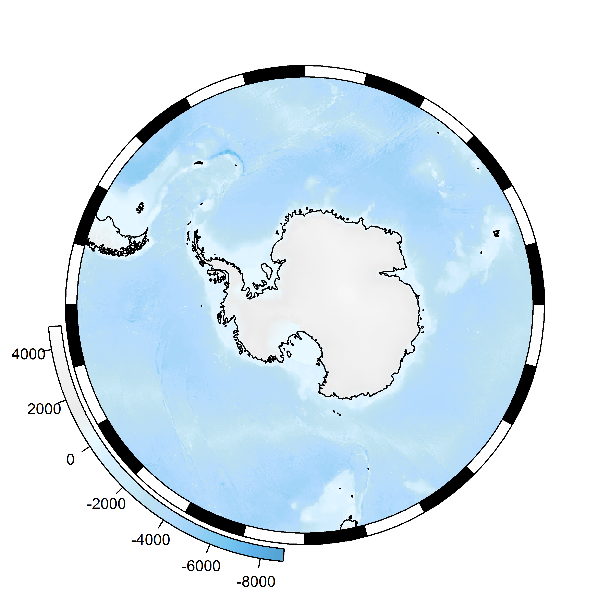
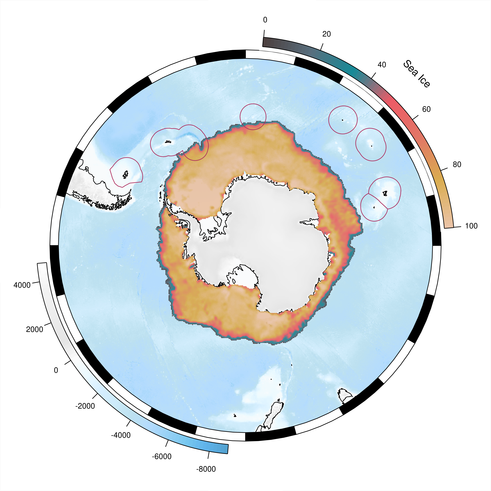
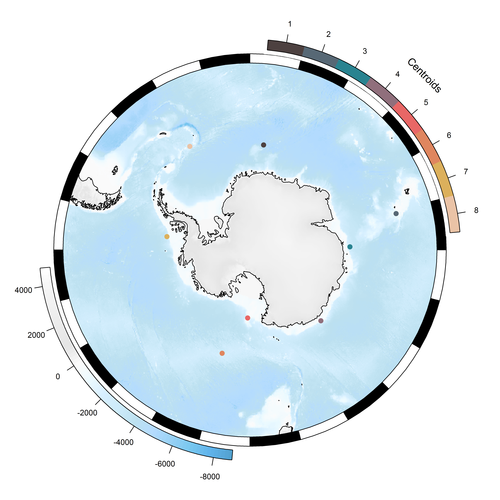
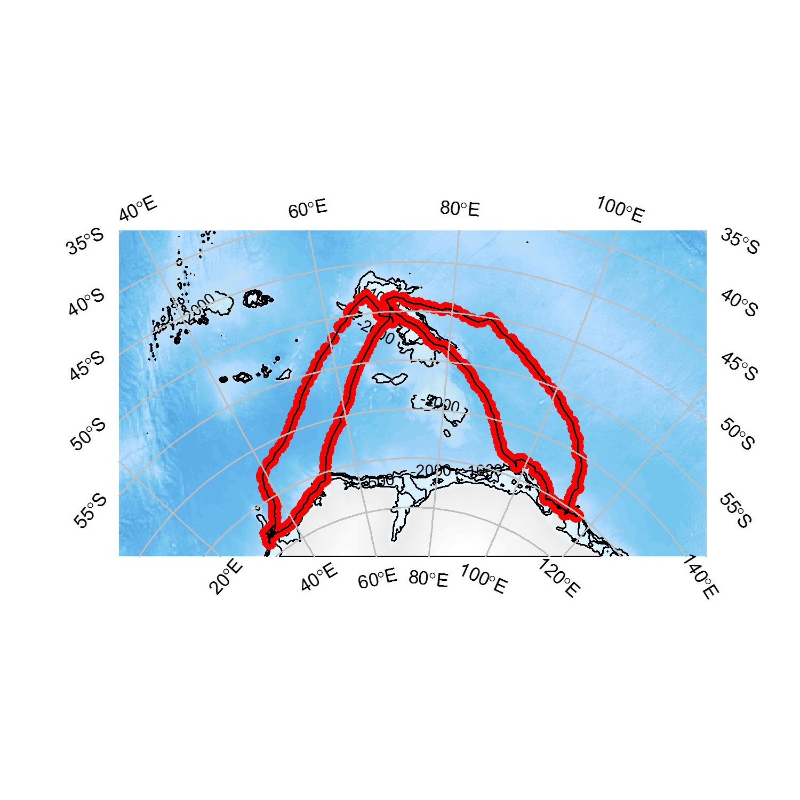
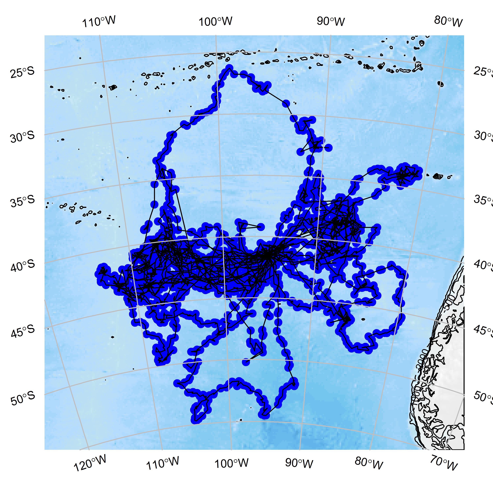
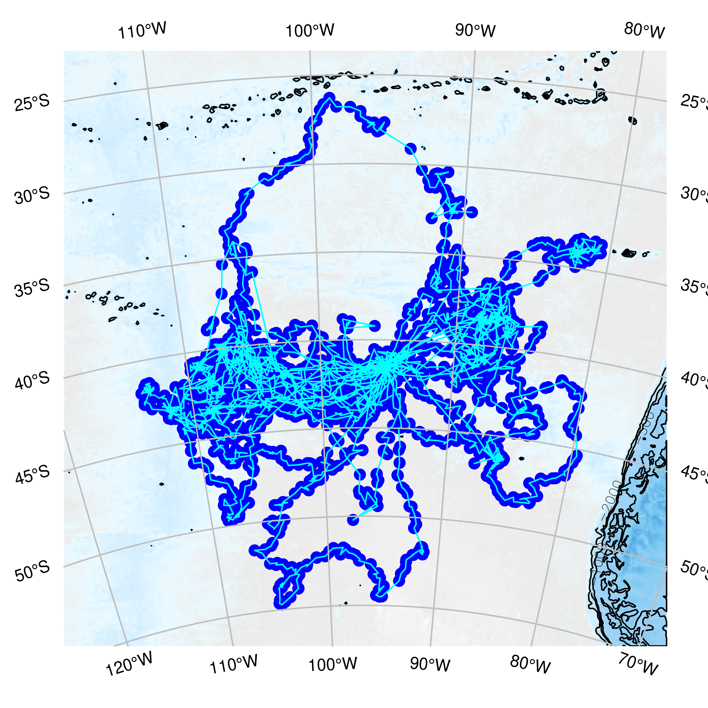
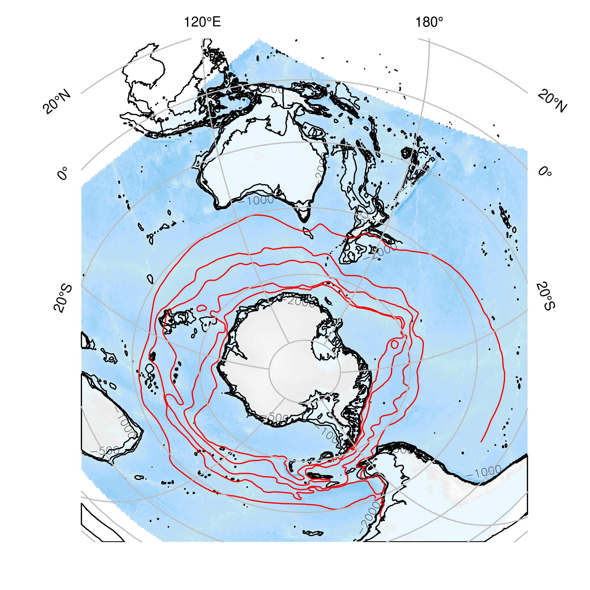

The goal of SOmap is to make publication quality round Southern Ocean maps in polar projections with little effort. This package is still very much a work in progress contact me with any questions or suggestions.
Installation
The development version from GitHub with:
Example
To make a simple map you can use the following function; use ? SOmap to see all the options for modifying layers.

There is also SOmanagement() which provides management layers for the Southern Ocean and SOleg() which gives custom rounded legends for added map layers.
## custom colours
spiritedMedium <- colorRampPalette(c("#4D4140", "#596F7E", "#168B98", "#ED5B67", "#E27766", "#DAAD50", "#EAC3A6"))
spirited <- spiritedMedium(80)
SOmap(Trim = -40)
## add an example sea ice raster, which is bundled with SOmap
plot(ice, col = spirited, add = TRUE, legend = FALSE, alpha = 0.95)
SOleg(ice, position = "topright", col = spirited, ticks = 6,
tlabs = c("0", "20", "40", "60", "80", "100"),
Trim = -40, label = "Sea Ice", type = "continuous")
## add the exclusive economic zones management layer
SOmanagement(EEZ = TRUE)
Curved legends can be either continuous (as above) or discrete.
spirited8 <- spiritedMedium(8)
SOmap()
plot(centroids, col=spirited8, add=TRUE, pch=19)
SOleg(centroids,position = "topright", col = spirited8, ticks = 8,
tlabs =1:8, label = "Centroids", type = "discrete")
An automatic plot function SOauto_map() will take any data in the form of longitude and latitude vectors and create a guess at a map.

The SOauto_map, SOmap, and SOmap2 functions return the data used to make the map so that further customization can be made. Plotting or printing the returned object will cause the map to be displayed in the graphics device.
data("albatross", package = "adehabitatLT")
## convert the albatross data to a single matrix of lon, lat points
albatrack <- do.call(rbind, lapply(albatross, function(z) rgdal::project(rbind(as.matrix(z[, c("x", "y")]), NA), "+proj=utm +zone=42 +south +datum=WGS84", inv = TRUE)))
## construct the map and return it, but don't plot it
alb_map <- SOauto_map(albatrack[, 1], albatrack[, 2])Modifying this map object is currently a rather experimental process (proceed at your own risk!) but, for example, if we wished to change the points to be blue rather than red:

We could also decide we want a reversed bathymetry color and cyan lines between the dots.
# change the line color
alb_map$lcol <- "cyan"
# reverse the bathymetry
alb_map$bathy_palette<-rev(alb_map$bathy_palette)
## plot it
alb_map
Objects from sf or sp may also be used. (If a “raster” is given it is used only for its extent.)
## use the bundled fronts data as an example
mydata <- SOmap_data$fronts_orsi
SOauto_map(mydata, family = "laea", centre_lon = 147, input_points = FALSE, lcol = 2)
Please note that the SOmap project is released with a Contributor Code of Conduct. By contributing to this project, you agree to abide by its terms.